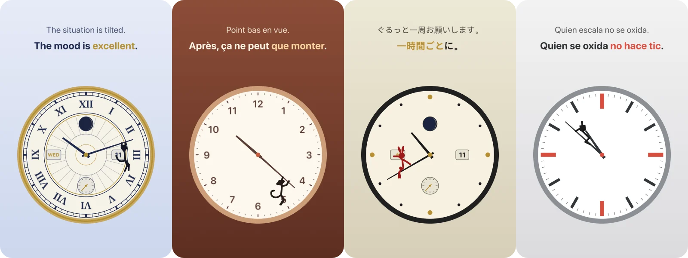
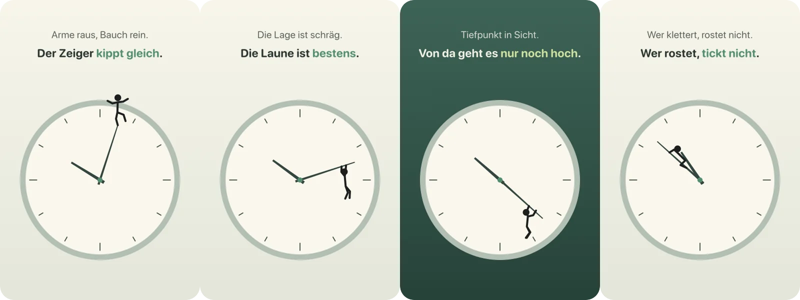
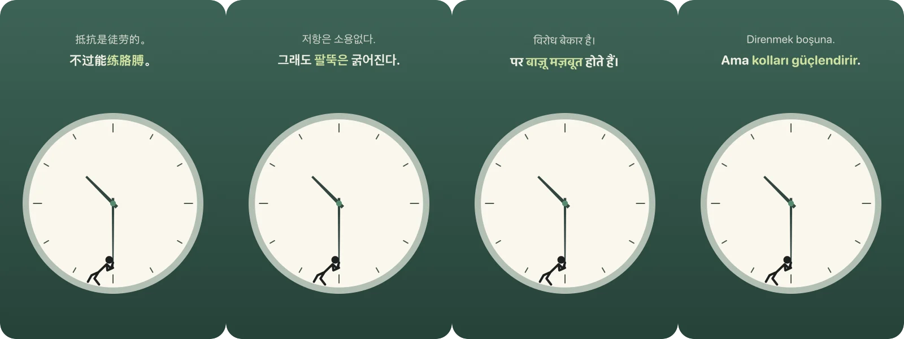
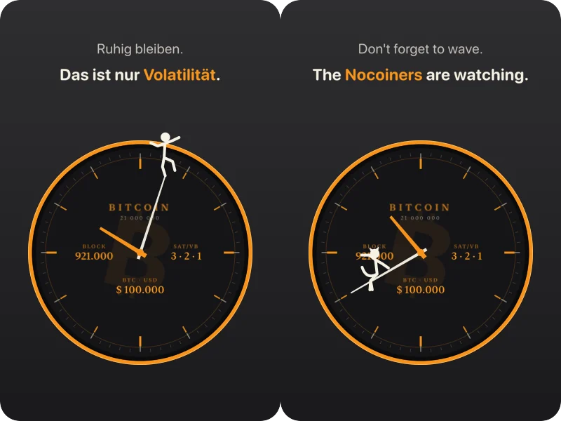

Eine Uhr
mit Mitbewohner.
Fun Watch ist eine Schreibtischuhr für den Mac. Auf dem Minutenzeiger lebt eine kleine Figur. Sie balanciert, hängt, rutscht und klettert, während die Stunde vergeht, und sagt jede Stunde etwas Neues dazu.
macOS 14 oder neuer · MIT-Lizenz · die App heißt intern Zeigerreiter

Eine Stunde mit der Figur
Der Zeiger bestimmt, wie es ihr geht.
Steht der Zeiger oben, balanciert die Figur auf der Spitze. Kippt er nach unten, hängt sie dran und rutscht, bis sie sich um halb gegen ihn stemmen muss. Danach fährt sie gemütlich mit und klettert zur vollen Stunde wieder nach oben. Wenn es ihr schlecht geht, wird der Hintergrund dunkel.
Der Film zeigt die Vorführung aus dem Menü: eine ganze Stunde in 40 Sekunden. Die zweite Zeile erscheint jeweils eine Minute nach Beginn einer Bewegung.

72 Sprüche je Sprache
Sechs Bewegungen mit je zwölf Sprüchen. Jede Stunde kommt je Bewegung ein anderer, nie derselbe zweimal hintereinander. Nach einem Neustart steht derselbe Spruch da.
Fünf Figuren
Strichmännchen, Katze, Affe, Hase und Roboter. Alle haben dieselben Bewegungen, aber ihr eigenes Kostüm.
Fünf Zifferblätter, sechs Farbwelten
Schlicht, Punkte, Ziffern, Balken und Big Ben mit römischen Zahlen. Dazu Salbei, Bitcoin, Nacht, Sand, Westminster und Schiefer.
Komplikationen
Auf Wunsch zeigt das Blatt Datum, Wochentag, Mondphase und eine kleine Sekunde.
Jede Stunde anders
Figur, Farbe und Zifferblatt können zur vollen Stunde wechseln. Auch hier kommt nie dasselbe direkt nacheinander.
Sparsam
Die Bewegungen laufen über Core Animation. Die App braucht im Betrieb kaum CPU und schaut nur alle zehn Sekunden nach der Zeit.
Zwölf Sprachen
Von Deutsch bis Hindi
Deutsch, Englisch, Französisch, Spanisch, Italienisch, Portugiesisch, Niederländisch, Türkisch, Chinesisch, Japanisch, Koreanisch und Hindi. Das Menü, der Wochentag und die Zahlen folgen der gewählten Sprache. Die Übersetzungen sind frei übertragen und nicht von Muttersprachlern geprüft. Wer es besser weiß, ist herzlich eingeladen.

Bitcoin-Modus
HODL, auch wenn der Zeiger fällt
Ein Klick oben im Menü, und die Uhr trägt das Blatt der Bitcoin-Uhr: dunkel, Lünette in Orange, links die Blockhöhe, rechts die Gebühren in sat/vB, unten der Kurs in US-Dollar. Die Werte kommen alle fünf Minuten von mempool.space, und nur dann, wenn der Modus an ist. Die Figur spricht jetzt über Stacking, Difficulty und number go up, ebenfalls in allen zwölf Sprachen.

Bedienung
Ziehen und Rechtsklick, mehr nicht.
Die Uhr sitzt als randloses Fenster auf dem Schreibtisch. Mit der linken Maustaste ziehst du sie hin, wo sie stehen soll. Ein Rechtsklick öffnet das Menü.
Installation
Selbst bauen, in einem Befehl.
Wie bei LibraryCompass gibt es bewusst keine fertige Programmdatei: ohne bezahltes Apple-Entwicklerprogramm ließe sich keine notarisieren. Das Skript baut die App, prüft alle Sprüche, signiert ad hoc, installiert nach „Programme“ und startet die Uhr. Du brauchst macOS 14 oder neuer und Xcode oder die Command Line Tools.
# Quellcode holen, bauen, installieren, starten
git clone https://github.com/JoeMartinBTC/fun_watch.git
cd fun_watch
bash Scripts/build_local_app.shMitmachen
Baut die Uhr weiter.
Fun Watch ist zum Spaß entstanden und soll Spaß bleiben. Wer eine Idee hat, kann loslegen: Repository forken, ausprobieren, einen Pull Request schicken. Auch ein Issue mit einer guten Idee ist ein Beitrag. Der Code nutzt nur Apple-Frameworks.
- Bessere Übersetzungen von Muttersprachlern
- Neue Figuren, etwa ein Pinguin oder ein Drache
- Weitere Sprachen
- Eigene Sprüche aus einer Datei
- Ein Wecker, bei dem die Figur Alarm schlägt
- Kurs in Euro und weiteren Währungen